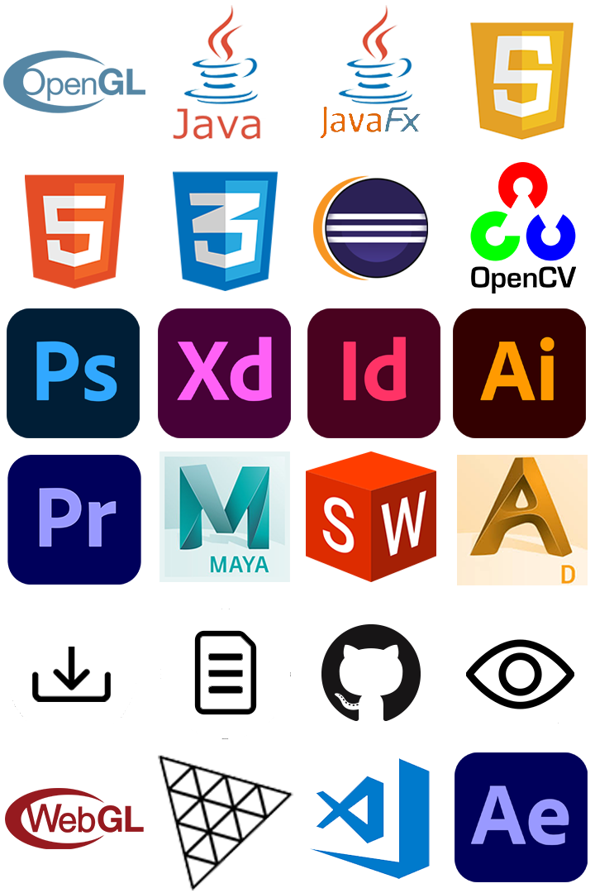

This is my portfolio website to present my projects.
I started out concept designing in Adobe XD and programmed it later from scratch using plain JS, CSS and HTML.
The landing screen shows endless procedural genrated terrain with biomes utilizing WebGL.
Tools
Role
Web Design
Web Developement
Computer Graphics
Video Editing
Type
Personal Project
Created
February 2020 - March 2020
Features
Landing Screen
The landing screen shows endless procedural genrated terrain with biomes using the WebGL library Three.js.
Its chunk based and chunks behind you despawn while chunks ahead of you spawn.
The biomes and the terrain are generated using simplex noise just like my procedural planets but in 2D.
Animations
I focused on animations to make navigation more satisfying.
I used plain CSS/JavaScript to realize all animations.
Project Websites
Every project I did has its own website which provides more information about it.
I also provided links to certain media like the source code or a download link.
Picture Gallery
Besides videos and text I also uploaded images of the project inside a gallery.
Mobile friendly
Although the website is designed for desktop I still tried to make a working mobile version.
This is my first attempt developing for mobile and I think it works just fine. Give it a try and tell me what you think!
Bandwith usage

To lower the bandwith usage I used WebP and WebM file formats for pictures and videos to lower their size
but I also provided fallbacks like mp4 videos or png images if the browser doesnt support new formats.
Size and quality of videos and pictures are also lowered as much as possible.
All Icons are stored in one picture to have less http requests.